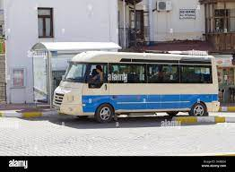
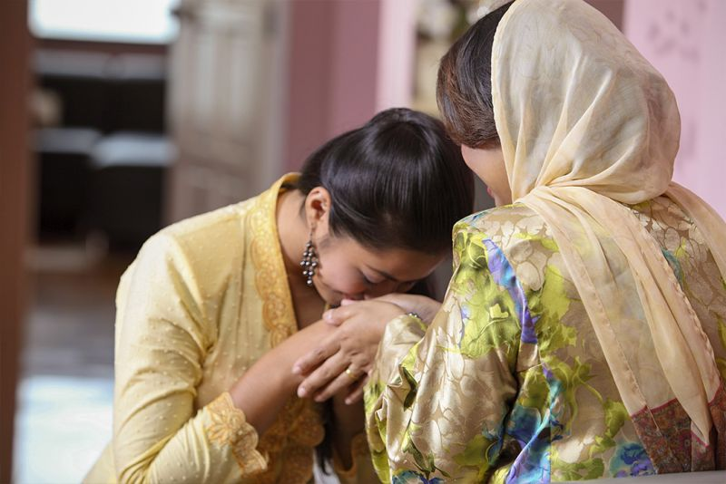
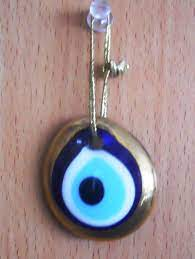
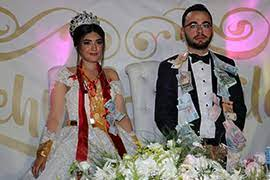
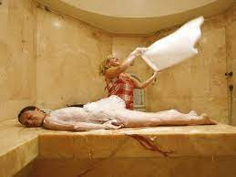

É um micro ônibus coletivo usado nas cidades grandes da Turquia. Alguns tem rota definida e outros levam seus passageiros até o lugar que cada um precisa chegar. O motorista de Dolmus inicia a viagem quando há passageiros suficientes para encher o veículo.
Uma coisa muito comum é que os homens se cumprimentam com abraços e beijos no rosto de, é uma forma espontânea entre os amigos. É muito difícil ver homens cumprimentando mulheres desconhecidas com beijos no rosto. Também é muito normal que as pessoas mais velhas recebem beijos nas mãos dos membros mais novos da família
O Nazar Boncuk, que é também conhecido como olho turco é um símbolo conhecido na turquia e em muitos países no oriente médio também. Eles acreditem que ele ajuda a evitar o azar e o mau olhado.
Quando um moço faz um pedido de casamento para uma moça, se ela não gostou dele a família dela manda uma notícia para a família dele com uma desculpa como, ela não está preparada para casamento ou ela vai fazer a faculdade, ou outros deste tipo, mas se a menina gostou dele e a família dela não manda desculpas nem notícias de rejeição, a família do moço convida a família da pretendente para jantar. Se tudo estiver correndo bem, no segundo passo, eles marcam a noite de compromisso (noivado), tipo uma festa pequena com convidados das duas famílias, os amigos do noivo e da noiva. Depois dessa festa o noivo e a noiva podem ter mais tempo, sozinhos. O noivo e a família dele dá presentes, moedas e acessórios de ouro para a noiva. Logo logo depois de três meses ou no máximo um ano acontece o casamento. A família da moça é responsável pela cozinha, as cortinas, e pelo quarto para o casal. A família do moço é responsável pela casa, pelo restante dos cômodos e também é responsável pela festa do casamento.
O Hamam Turco é um banheiro otomano tradicional. Ele permanece numa atmosfera saturada de vapor de água (100% de humidade), a uma temperatura entre os 40 e 50 graus. São também utilizadas folhas de eucalipto na ativação dos vapores. A massagista indica que é o tempo de deitar na barriga com a cabeça numa toalha branca confortável, depois você escolhe o tipo de massagem que quer forte, média ou leve, a sua escolha vai determinar a força e a velocidade da massagem. Depois desse banho turco você deve tomar uma ducha com água tépida para ajudar a abrir os poros. Em seguida uma ducha fria, logo depois uma ducha quente com duração de 15 minutos. Os médicos antigos criaram esta técnica para hidratar o corpo. Outros benefícios são: relaxamento muscular, ativação da circulação e o alívio do estresse. Esta terapia ganhou importância e espalhou-se pelas civilizações armênia, árabe, grega e romana. Há também uma pintura de olho no Museu de Louvre em Paris desde 1862 o nome dela é (Le Bain turc). Essa pintura apresenta um grupo das mulheres turcas lindas e nuas no banho turco.
